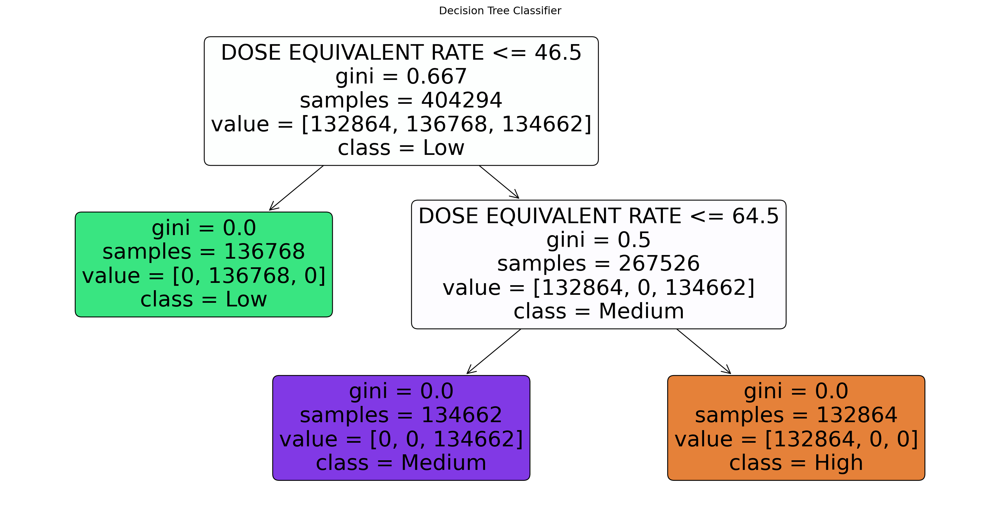

Random Forest is like a council of wise advisors, each bringing their unique perspective to a problem. By leveraging the wisdom of the crowd, it arrives at decisions that are often more accurate and reliable than those made by a single decision tree. This blend of simplicity, robustness, and versatility makes Random Forest a valuable tool in our data-driven world.
Decision Tree
They break down complex decisions into simpler, more manageable steps, making them a valuable tool in various applications, from business strategy to data analysis.
Model
Prepareing data
import matplotlib.pyplot as pltimport pandas as pdfrom sklearn.preprocessing import LabelEncoderfrom sklearn.ensemble import RandomForestClassifierfrom sklearn.model_selection import train_test_splitfrom sklearn.dummy import DummyClassifierfrom sklearn.metrics import classification_reportfrom sklearn.tree import DecisionTreeClassifierfrom sklearn.tree import plot_treefrom sklearn.metrics import confusion_matriximport seaborn as snsimport warningswarnings.filterwarnings('ignore')data = pd.read_csv('../data/Cleaned/merged_data.csv')# Analyzing the distribution of the "DOSE EQUIVALENT RATE (nSv/h)"plt.figure(figsize=(10,6))plt.hist(data["DOSE EQUIVALENT RATE (nSv/h)"], bins=30, color='blue', alpha=0.7)plt.title('Distribution of DOSE EQUIVALENT RATE (nSv/h)')plt.xlabel('DOSE EQUIVALENT RATE (nSv/h)')plt.ylabel('Frequency')plt.grid(True)plt.show()
We can see that Baseline Mode is not very accurate at predicting the Category.
Model Turning
Random Forest
rf_classifier = RandomForestClassifier(random_state=42)# Training the modelrf_classifier.fit(X_train, y_train)# Predicting the test set resultsy_pred = rf_classifier.predict(X_test)# Generating a classification reportclassification_report_result = classification_report(y_test, y_pred)print(classification_report_result)
From the result we can see that Random Forest almost has the prefect accuracy
Decision Tree
# Removing the entry with missing categorydata_cleaned = data.dropna(subset=['Category'])# Encoding the 'Category' columnlabel_encoder = LabelEncoder()data_cleaned['Category_encoded'] = label_encoder.fit_transform(data_cleaned['Category'])# Splitting the data into features and target variableX = data_cleaned[['DOSE EQUIVALENT RATE (nSv/h)']] # Featuresy = data_cleaned['Category_encoded'] # Target variable# Splitting the dataset into training and testing setsX_train, X_test, y_train, y_test = train_test_split(X, y, test_size=0.3, random_state=42)# Creating the Decision Tree Classifierclf = DecisionTreeClassifier(random_state=42)# Training the modelclf.fit(X_train, y_train)# Predicting the test set resultsy_pred = clf.predict(X_test)# Evaluating the modelevaluation_report = classification_report(y_test, y_pred, target_names=label_encoder.classes_)print(evaluation_report)
# Plotting the decision treeplt.figure(figsize=(20, 10))plot_tree(clf, filled=True, feature_names=['DOSE EQUIVALENT RATE'], class_names=label_encoder.classes_, rounded=True, proportion=False)plt.title("Decision Tree Classifier")plt.show()

Conclusions
In summary, while the Decision Tree and Random Forest models show perfect performance, but this is a little werid, as most model doesn’t have prefect accuracy. The Baseline Model serves its purpose by providing a lower-bound benchmark for model performance.